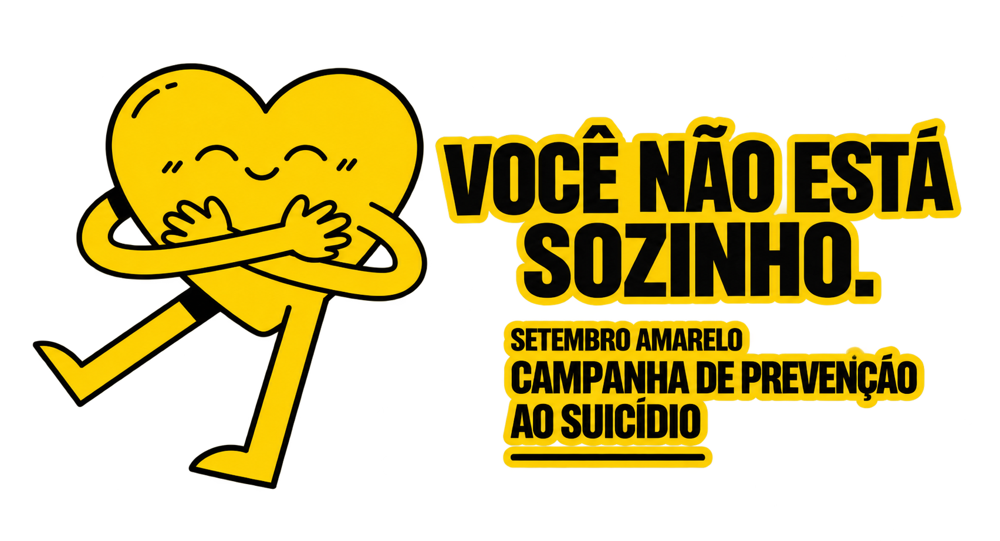

Acho que oq mais me marcava eram os ataques de pânico A primeira vez que tive, senti que ia morrer, mesmo sabendo que não ia. É como se você estivesse tentando respirar por um canudo no oceano profundo, com a pressão sob seu pulmão A primeira vez que tive foi pra apresentar um trabalho, e após isso, passei a ter medo de ter outro ataque de pânico Então o maior medo era quando ele fosse acontecer, oq me deixava sob vigilância constante Passei a ter medo de apresentar trabalhos e só de ir a escola já ficava com medo de outro acontecer, pois associei o local ao ataque de pânico.
SETEMBRO AMARELO • VOCÊ NÃO ESTÁ SOZINHO
Histórias que
Histórias que
inspiram
Cada história é única. Compartilhar também é uma forma de ajudar.

DEPOIMENTOS
Experiências que podem fazer a diferença
É super normal, faz parte de quem "somos" e não devemos nos sentir piores por tal fato. Apenas devemos ver formas de lidar e de nunca deixar os pensamentos ruins tomarem conta de você!
Agora eu tô aqui tentando fingir que tá tudo bem, mas minha cabeça não para um segundo. Parece que tem mil pensamentos acontecendo ao mesmo tempo e eu não consigo desligar nenhum deles. Meu coração tá acelerado, meu peito apertado e eu sinto um medo enorme sem nem saber exatamente do quê. Eu queria conseguir descansar minha mente, mas ela me faz pensar em tudo que pode dar errado, me faz duvidar de mim mesma e me deixa cansada o tempo todo. O pior é que ninguém percebe, porque por fora eu continuo sorrindo e agindo normalmente, mas por dentro eu tô lutando contra uma tempestade que não acaba. Às vezes eu só queria sentir um pouco de paz e parar de carregar esse peso que parece ficar maior a cada dia.
não tente lutar contra cada pensamento que aparece na sua cabeça. Nem todo pensamento é uma verdade, e nem toda preocupação vai acontecer. Quando a ansiedade vier, tente focar no que está acontecendo agora, neste momento, e seja paciente consigo mesma. Você não precisa resolver todos os problemas de uma vez. Um passo de cada vez já é suficiente. E lembre-se: pedir ajuda quando o peso estiver grande demais também é um ato de coragem, não de fraqueza
PRECISA DE AJUDA?
CVV • 188
Conversar pode ser o primeiro passo.
Se você estiver passando por um momento difícil, procure alguém de confiança ou um serviço de apoio.
SOBRE O PROJETO
Ouvir sem julgar também é cuidar.
Este espaço foi pensado para valorizar experiências reais e mostrar que pedir ajuda não é sinal de fraqueza. Os depoimentos apresentados são exemplos ilustrativos.